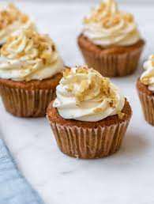

Carrot Cupcakes With White Chocolate Cream Cheese Icing

Amazing Carrot Cupcake With Chocolate Cream Cheese Icing
Award winning carrot cupcake that will satisfy any sweet tooth and fairly simple to make
This recipe has been past down for genrations thru our family, baked every easter and is always a hit with everyone so we figured lets release the recipe so that everyone can enjoy this masterpiece so try it for yourself and let me know how it turns out
Ingredients cream cheese
- 2 ounces white chocolate
- 1 (8 ounce) package cream cheese, softened
- ½ cup unsalted butter, softened
- 1 teaspoon vanilla extract
- ½ teaspoon orange extract
- 4 cups confectioners' sugar
- 2 tablespoons heavy cream
ingredents carrot cake
- 2 eggs, lightly beaten
- 1 ⅛ cups white sugar
- ⅓ cup brown sugar
- ½ cup vegetable oil
- 1 teaspoon vanilla extract
- 2 cups shredded carrots
- ½ cup crushed pineapple
- 1 ½ cups all-purpose flour
- 1 ¼ teaspoons baking soda
- ½ teaspoon salt
- 1 ½ teaspoons ground cinnamon
- ½ teaspoon ground nutmeg
- ¼ teaspoon ground ginger
- 1 cup chopped walnuts
Steps
- Preheat oven to 350 degrees F (175 degrees C). Lightly grease 12 muffin cups.
- In small saucepan, melt white chocolate over low heat. Stir until smooth, and allow to cool to room temperature.
- In a bowl, beat together the cream cheese and butter until smooth. Mix in white chocolate, 1 teaspoon vanilla, and orange extract. Gradually beat in the confectioners' sugar until the mixture is fluffy. Mix in heavy cream.
- Beat together the eggs, white sugar, and brown sugar in a bowl, and mix in the oil and vanilla. Fold in carrots and pineapple. In a separate bowl, mix the flour, baking soda, salt, cinnamon, nutmeg, and ginger. Mix flour mixture into the carrot mixture until evenly moist. Fold in 1/2 cup walnuts. Transfer to the prepared muffin cups.
- Bake 25 minutes in the preheated oven, or until a toothpick inserted in the center of a muffin comes out clean. Cool completely on wire racks before topping with the icing and sprinkling with remaining walnuts.